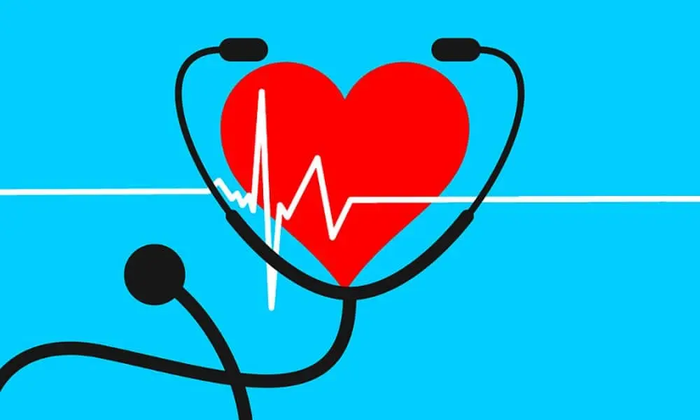

Consejos para una Vida Saludable
-
Alimentación balanceada: Consume frutas, verduras, proteínas magras y grasas saludables.
-
Evitar hábitos nocivos: Reduce el consumo de alcohol y evita el tabaco.
-
Chequeos médicos: Realiza controles periódicos para prevenir enfermedades.
-
Salud mental: Dedica tiempo a actividades que te hagan feliz y fortalece tus relaciones sociales.
